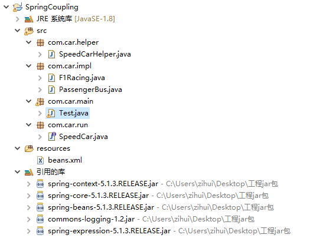
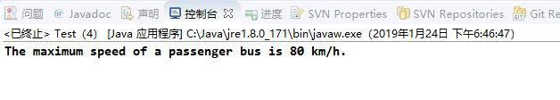

<!DOCTYPE HTML>
<html>
<head><meta name="generator" content="Hexo 3.8.0">
  <meta charset="utf-8">
  <meta http-equiv="pragma" content="no-cache">
  <meta http-equiv="cache-control" content="no-cache">
  <meta http-equiv="expires" content="0">
  
  <title>Spring之松耦合 | 徐子辉的个人站点</title>
  <meta name="author" content="xuzh">
  
  <meta name="description" content="Spring松耦合的个人理解和代码实例理解Spring的松耦合概念，那么我们先来看看一个不使用Sring的实例代码
先看一下整个测试项目案例的结构">
  
  
  <meta name="viewport" content="width=device-width, initial-scale=1, maximum-scale=1">

  <meta property="og:title" content="Spring之松耦合">
  <meta property="og:site_name" content="徐子辉的个人站点">

  
    <meta property="og:image" content>
  

  
  
    <link href="/favicon.png" rel="icon">
  
  
  <link rel="stylesheet" href="/css/bootstrap.min.css" media="screen" type="text/css">
  <link rel="stylesheet" href="/css/font-awesome.css" media="screen" type="text/css">
  <link rel="stylesheet" href="/css/style.css" media="screen" type="text/css">
  <link rel="stylesheet" href="/css/responsive.css" media="screen" type="text/css">
  <link rel="stylesheet" href="/css/highlight.css" media="screen" type="text/css">
  <link rel="stylesheet" href="/css/google-fonts.css" media="screen" type="text/css">
  <!--[if lt IE 9]><script src="//html5shiv.googlecode.com/svn/trunk/html5.js"></script><![endif]-->

  <script src="/js/jquery-2.0.3.min.js"></script>

  <!-- analytics -->
  
<script>
  (function(i,s,o,g,r,a,m){i['GoogleAnalyticsObject']=r;i[r]=i[r]||function(){
  (i[r].q=i[r].q||[]).push(arguments)},i[r].l=1*new Date();a=s.createElement(o),
  m=s.getElementsByTagName(o)[0];a.async=1;a.src=g;m.parentNode.insertBefore(a,m)
  })(window,document,'script','//www.google-analytics.com/analytics.js','ga');
  ga('create', 'UA-70812759-1', 'auto');
  ga('send', 'pageview');
</script>


<script>
var _hmt = _hmt || [];
(function() {
  var hm = document.createElement("script");
  hm.src = "//hm.baidu.com/hm.js?cb5448498d7169c668b07c2b255d62c1";
  var s = document.getElementsByTagName("script")[0]; 
  s.parentNode.insertBefore(hm, s);
})();
</script>


</head>
</html>
 <body>  
  <nav id="main-nav" class="navbar navbar-inverse navbar-fixed-top" role="navigation">
    <div class="container">
      <button type="button" class="navbar-header navbar-toggle" data-toggle="collapse" data-target=".navbar-collapse">
		<span class="sr-only">Toggle navigation</span>
        <span class="icon-bar"></span>
        <span class="icon-bar"></span>
        <span class="icon-bar"></span>
      </button>
	  <a class="navbar-brand" href="/">徐子辉的个人站点</a>
      <div class="collapse navbar-collapse nav-menu">
		<ul class="nav navbar-nav">
		  
		  <li>
			<a href="/archives" title="All the articles.">
			  <i class="fa fa-archive"></i>Archives
			</a>
		  </li>
		  
		  <li>
			<a href="/categories" title="All the categories.">
			  <i class="fa fa-folder"></i>Categories
			</a>
		  </li>
		  
		  <li>
			<a href="/tags" title="All the tags.">
			  <i class="fa fa-tags"></i>Tags
			</a>
		  </li>
		  
		  <li>
			<a href="/about" title="About me.">
			  <i class="fa fa-user"></i>About
			</a>
		  </li>
		  
		</ul>
      </div>
    </div> <!-- container -->
</nav>
<div class="clearfix"></div>

  <div class="container">
  	<div class="content">
    	 


	
		<div class="page-header">
			<h1> Spring之松耦合</h1>
		</div>
	


<div class="row post">
	<!-- cols -->
	
	<div id="top_meta"></div>
	<div class="col-md-9">
	

	<!-- content -->
	<div class="mypage">		
	  		

	  <h3 id="Spring松耦合的个人理解和代码实例"><a href="#Spring松耦合的个人理解和代码实例" class="headerlink" title="Spring松耦合的个人理解和代码实例"></a>Spring松耦合的个人理解和代码实例</h3><p>理解Spring的松耦合概念，那么我们先来看看一个不使用Sring的实例代码</p>
<p>先看一下整个测试项目案例的结构</p>
<a id="more"></a>
<p></p>
<h4 id="正常方式"><a href="#正常方式" class="headerlink" title="正常方式"></a>正常方式</h4><p>创建一个接口，这个接口指定车辆的行驶速度</p>
<figure class="highlight java"><table><tr><td class="gutter"><pre><span class="line">1</span><br><span class="line">2</span><br><span class="line">3</span><br><span class="line">4</span><br><span class="line">5</span><br><span class="line">6</span><br><span class="line">7</span><br></pre></td><td class="code"><pre><span class="line"><span class="keyword">package</span> com.car.run;</span><br><span class="line"></span><br><span class="line"><span class="keyword">public</span> <span class="class"><span class="keyword">interface</span> <span class="title">SpeedCar</span> </span>&#123;</span><br><span class="line"></span><br><span class="line">	<span class="function"><span class="keyword">public</span> <span class="keyword">void</span> <span class="title">runSpeed</span><span class="params">()</span></span>;</span><br><span class="line"></span><br><span class="line">&#125;</span><br></pre></td></tr></table></figure>
<p>现在我们指定两辆车的行驶速度：一辆F1赛车，行驶最高速度为300 km/h, 一辆客运大巴，速度为 80 km/h。</p>
<figure class="highlight java"><table><tr><td class="gutter"><pre><span class="line">1</span><br><span class="line">2</span><br><span class="line">3</span><br><span class="line">4</span><br><span class="line">5</span><br><span class="line">6</span><br><span class="line">7</span><br><span class="line">8</span><br><span class="line">9</span><br><span class="line">10</span><br><span class="line">11</span><br><span class="line">12</span><br><span class="line">13</span><br></pre></td><td class="code"><pre><span class="line"><span class="comment">//F1赛车</span></span><br><span class="line"><span class="keyword">package</span> com.car.impl;</span><br><span class="line"></span><br><span class="line"><span class="keyword">import</span> com.car.run.SpeedCar;</span><br><span class="line"></span><br><span class="line"><span class="keyword">public</span> <span class="class"><span class="keyword">class</span> <span class="title">F1Racing</span> <span class="keyword">implements</span> <span class="title">SpeedCar</span> </span>&#123;</span><br><span class="line"></span><br><span class="line">	<span class="meta">@Override</span></span><br><span class="line">	<span class="function"><span class="keyword">public</span> <span class="keyword">void</span> <span class="title">runSpeed</span><span class="params">()</span> </span>&#123;</span><br><span class="line">		System.out.println(<span class="string">"The maximum speed of the F1 is 300 km/h."</span>);</span><br><span class="line">	&#125;</span><br><span class="line"></span><br><span class="line">&#125;</span><br></pre></td></tr></table></figure>
<figure class="highlight java"><table><tr><td class="gutter"><pre><span class="line">1</span><br><span class="line">2</span><br><span class="line">3</span><br><span class="line">4</span><br><span class="line">5</span><br><span class="line">6</span><br><span class="line">7</span><br><span class="line">8</span><br><span class="line">9</span><br><span class="line">10</span><br><span class="line">11</span><br><span class="line">12</span><br><span class="line">13</span><br></pre></td><td class="code"><pre><span class="line"><span class="comment">//客运大巴</span></span><br><span class="line"><span class="keyword">package</span> com.car.impl;</span><br><span class="line"></span><br><span class="line"><span class="keyword">import</span> com.car.run.SpeedCar;</span><br><span class="line"></span><br><span class="line"><span class="keyword">public</span> <span class="class"><span class="keyword">class</span> <span class="title">PassengerBus</span> <span class="keyword">implements</span> <span class="title">SpeedCar</span> </span>&#123;</span><br><span class="line"></span><br><span class="line">	<span class="meta">@Override</span></span><br><span class="line">	<span class="function"><span class="keyword">public</span> <span class="keyword">void</span> <span class="title">runSpeed</span><span class="params">()</span> </span>&#123;</span><br><span class="line">		System.out.println(<span class="string">"The maximum speed of a passenger bus is 80 km/h."</span>);</span><br><span class="line">	&#125;</span><br><span class="line"></span><br><span class="line">&#125;</span><br></pre></td></tr></table></figure>
<p>按正常方式我们直接调用</p>
<figure class="highlight java"><table><tr><td class="gutter"><pre><span class="line">1</span><br><span class="line">2</span><br><span class="line">3</span><br><span class="line">4</span><br><span class="line">5</span><br><span class="line">6</span><br><span class="line">7</span><br><span class="line">8</span><br><span class="line">9</span><br><span class="line">10</span><br><span class="line">11</span><br><span class="line">12</span><br></pre></td><td class="code"><pre><span class="line"><span class="keyword">package</span> com.car.main;</span><br><span class="line"></span><br><span class="line"><span class="keyword">import</span> com.car.impl.PassengerBus;</span><br><span class="line"><span class="keyword">import</span> com.car.run.SpeedCar;</span><br><span class="line"></span><br><span class="line"><span class="keyword">public</span> <span class="class"><span class="keyword">class</span> <span class="title">Test</span> </span>&#123;</span><br><span class="line"></span><br><span class="line">	<span class="function"><span class="keyword">public</span> <span class="keyword">static</span> <span class="keyword">void</span> <span class="title">main</span><span class="params">(String[] args)</span> </span>&#123;</span><br><span class="line">		SpeedCar speedcar = <span class="keyword">new</span> PassengerBus();</span><br><span class="line">		speedcar.runSpeed();</span><br><span class="line">	&#125;</span><br><span class="line">&#125;</span><br></pre></td></tr></table></figure>
<p>目前来看，其实这种方法也挺简单的，无非就是new 出一个客运大巴的对象 speedcar，然后通过speedcar来输出客运大巴的最高时速。但是我们new出的对象speedcar完全依赖的是客运大巴，或者说对客运大巴的耦合度特别高，它也仅仅是指向客运大巴PassengerBus，如果我们要输出F1赛车的最高时速，那么还需要再次new出F1赛车的对象。</p>
<p>结果显示</p>
<p></p>
<h4 id="通过辅助类实现"><a href="#通过辅助类实现" class="headerlink" title="通过辅助类实现"></a>通过辅助类实现</h4><figure class="highlight java"><table><tr><td class="gutter"><pre><span class="line">1</span><br><span class="line">2</span><br><span class="line">3</span><br><span class="line">4</span><br><span class="line">5</span><br><span class="line">6</span><br><span class="line">7</span><br><span class="line">8</span><br><span class="line">9</span><br><span class="line">10</span><br><span class="line">11</span><br><span class="line">12</span><br><span class="line">13</span><br><span class="line">14</span><br><span class="line">15</span><br><span class="line">16</span><br><span class="line">17</span><br></pre></td><td class="code"><pre><span class="line"><span class="keyword">package</span> com.car.helper;</span><br><span class="line"></span><br><span class="line"><span class="keyword">import</span> com.car.impl.PassengerBus;</span><br><span class="line"><span class="keyword">import</span> com.car.run.SpeedCar;</span><br><span class="line"></span><br><span class="line"><span class="keyword">public</span> <span class="class"><span class="keyword">class</span> <span class="title">SpeedCarHelper</span> </span>&#123;</span><br><span class="line"></span><br><span class="line">	SpeedCar speedcar;</span><br><span class="line"></span><br><span class="line">	<span class="function"><span class="keyword">public</span> <span class="title">SpeedCarHelper</span><span class="params">()</span></span>&#123;</span><br><span class="line">		speedcar = <span class="keyword">new</span> PassengerBus();</span><br><span class="line">	&#125;</span><br><span class="line"></span><br><span class="line">	<span class="function"><span class="keyword">public</span> <span class="keyword">void</span> <span class="title">getSpeed</span><span class="params">()</span> </span>&#123;</span><br><span class="line">		speedcar.runSpeed();</span><br><span class="line">	&#125;</span><br><span class="line">&#125;</span><br></pre></td></tr></table></figure>
<p>改造我们上一个方法中主方法实现内容</p>
<figure class="highlight java"><table><tr><td class="gutter"><pre><span class="line">1</span><br><span class="line">2</span><br><span class="line">3</span><br><span class="line">4</span><br><span class="line">5</span><br><span class="line">6</span><br><span class="line">7</span><br><span class="line">8</span><br><span class="line">9</span><br><span class="line">10</span><br><span class="line">11</span><br><span class="line">12</span><br></pre></td><td class="code"><pre><span class="line"><span class="keyword">package</span> com.car.main;</span><br><span class="line"></span><br><span class="line"><span class="keyword">import</span> com.car.helper.SpeedCarHelper;</span><br><span class="line"></span><br><span class="line"><span class="keyword">public</span> <span class="class"><span class="keyword">class</span> <span class="title">Test</span> </span>&#123;</span><br><span class="line"></span><br><span class="line">	<span class="function"><span class="keyword">public</span> <span class="keyword">static</span> <span class="keyword">void</span> <span class="title">main</span><span class="params">(String[] args)</span> </span>&#123;</span><br><span class="line">		SpeedCarHelper helper = <span class="keyword">new</span> SpeedCarHelper();</span><br><span class="line">		helper.getSpeed();</span><br><span class="line">	&#125;</span><br><span class="line"></span><br><span class="line">&#125;</span><br></pre></td></tr></table></figure>
<p>那么实际上这种方法也是一种高耦合，helper依赖与辅助类，而这个辅助类又依赖与客运大巴PassengerBus。</p>
<p>结果显示</p>
<p></p>
<h4 id="Spring实现"><a href="#Spring实现" class="headerlink" title="Spring实现"></a>Spring实现</h4><p>最后，我们通过Spring的依赖注入，实现生成松散的耦合。</p>
<p>改造辅助类</p>
<figure class="highlight java"><table><tr><td class="gutter"><pre><span class="line">1</span><br><span class="line">2</span><br><span class="line">3</span><br><span class="line">4</span><br><span class="line">5</span><br><span class="line">6</span><br><span class="line">7</span><br><span class="line">8</span><br><span class="line">9</span><br><span class="line">10</span><br><span class="line">11</span><br><span class="line">12</span><br><span class="line">13</span><br><span class="line">14</span><br><span class="line">15</span><br><span class="line">16</span><br></pre></td><td class="code"><pre><span class="line"><span class="keyword">package</span> com.car.helper;</span><br><span class="line"></span><br><span class="line"><span class="keyword">import</span> com.car.run.SpeedCar;</span><br><span class="line"></span><br><span class="line"><span class="keyword">public</span> <span class="class"><span class="keyword">class</span> <span class="title">SpeedCarHelper</span> </span>&#123;</span><br><span class="line"></span><br><span class="line">	SpeedCar speedcar;</span><br><span class="line"></span><br><span class="line">	<span class="function"><span class="keyword">public</span> <span class="keyword">void</span> <span class="title">setSpeedcar</span><span class="params">(SpeedCar speedcar)</span> </span>&#123;</span><br><span class="line">		<span class="keyword">this</span>.speedcar = speedcar;</span><br><span class="line">	&#125;</span><br><span class="line"></span><br><span class="line">	<span class="function"><span class="keyword">public</span> <span class="keyword">void</span> <span class="title">getSpeed</span><span class="params">()</span> </span>&#123;</span><br><span class="line">		speedcar.runSpeed();</span><br><span class="line">	&#125;</span><br><span class="line">&#125;</span><br></pre></td></tr></table></figure>
<p>创建 Spring bean 的配置文件，并在这里声明所有的Java对象的依赖</p>
<figure class="highlight xml"><table><tr><td class="gutter"><pre><span class="line">1</span><br><span class="line">2</span><br><span class="line">3</span><br><span class="line">4</span><br><span class="line">5</span><br><span class="line">6</span><br><span class="line">7</span><br><span class="line">8</span><br><span class="line">9</span><br><span class="line">10</span><br><span class="line">11</span><br><span class="line">12</span><br><span class="line">13</span><br><span class="line">14</span><br><span class="line">15</span><br></pre></td><td class="code"><pre><span class="line"><span class="meta">&lt;?xml version="1.0" encoding="UTF-8"?&gt;</span></span><br><span class="line"><span class="comment">&lt;!-- Spring-Common.xml --&gt;</span></span><br><span class="line"><span class="tag">&lt;<span class="name">beans</span> <span class="attr">xmlns</span>=<span class="string">"http://www.springframework.org/schema/beans"</span></span></span><br><span class="line"><span class="tag"><span class="attr">xmlns:xsi</span>=<span class="string">"http://www.w3.org/2001/XMLSchema-instance"</span></span></span><br><span class="line"><span class="tag"><span class="attr">xsi:schemaLocation</span>=<span class="string">"http://www.springframework.org/schema/beans</span></span></span><br><span class="line"><span class="tag"><span class="string">http://www.springframework.org/schema/beans/spring-beans-2.5.xsd"</span>&gt;</span></span><br><span class="line"></span><br><span class="line">	<span class="tag">&lt;<span class="name">bean</span> <span class="attr">id</span>=<span class="string">"speedCarHelper"</span> <span class="attr">class</span>=<span class="string">"com.car.helper.SpeedCarHelper"</span>&gt;</span></span><br><span class="line">		<span class="tag">&lt;<span class="name">property</span> <span class="attr">name</span>=<span class="string">"speedcar"</span> <span class="attr">ref</span>=<span class="string">"F1Racing"</span> /&gt;</span></span><br><span class="line">	<span class="tag">&lt;/<span class="name">bean</span>&gt;</span></span><br><span class="line"></span><br><span class="line">	<span class="tag">&lt;<span class="name">bean</span> <span class="attr">id</span>=<span class="string">"F1Racing"</span> <span class="attr">class</span>=<span class="string">"com.car.impl.F1Racing"</span> /&gt;</span></span><br><span class="line">	<span class="tag">&lt;<span class="name">bean</span> <span class="attr">id</span>=<span class="string">"PassengerBus"</span> <span class="attr">class</span>=<span class="string">"com.car.impl.PassengerBus"</span> /&gt;</span></span><br><span class="line"></span><br><span class="line"><span class="tag">&lt;/<span class="name">beans</span>&gt;</span></span><br></pre></td></tr></table></figure>
<p>改造主方法</p>
<figure class="highlight java"><table><tr><td class="gutter"><pre><span class="line">1</span><br><span class="line">2</span><br><span class="line">3</span><br><span class="line">4</span><br><span class="line">5</span><br><span class="line">6</span><br><span class="line">7</span><br><span class="line">8</span><br><span class="line">9</span><br><span class="line">10</span><br><span class="line">11</span><br><span class="line">12</span><br><span class="line">13</span><br><span class="line">14</span><br><span class="line">15</span><br><span class="line">16</span><br></pre></td><td class="code"><pre><span class="line"><span class="keyword">package</span> com.car.main;</span><br><span class="line"></span><br><span class="line"><span class="keyword">import</span> org.springframework.context.ApplicationContext;</span><br><span class="line"><span class="keyword">import</span> org.springframework.context.support.ClassPathXmlApplicationContext;</span><br><span class="line"></span><br><span class="line"><span class="keyword">import</span> com.car.helper.SpeedCarHelper;</span><br><span class="line"></span><br><span class="line"><span class="keyword">public</span> <span class="class"><span class="keyword">class</span> <span class="title">Test</span> </span>&#123;</span><br><span class="line"></span><br><span class="line">	<span class="function"><span class="keyword">public</span> <span class="keyword">static</span> <span class="keyword">void</span> <span class="title">main</span><span class="params">(String[] args)</span> </span>&#123;</span><br><span class="line">		ApplicationContext context = <span class="keyword">new</span> ClassPathXmlApplicationContext(<span class="string">"beans.xml"</span>);</span><br><span class="line">		SpeedCarHelper helper = (SpeedCarHelper) context.getBean(<span class="string">"speedCarHelper"</span>);</span><br><span class="line">		helper.getSpeed();</span><br><span class="line">	&#125;</span><br><span class="line"></span><br><span class="line">&#125;</span><br></pre></td></tr></table></figure>
<p>结果显示</p>
<p></p>
<p>现在我们通过beans.xml文件生成指定的输出，如果在后续的工作中我们希望输出客运大巴的最高时速，直接更改xml文件即可，不用修改代码，这样就降低了代码的耦合度。</p>
	  
	</div>

	<div>
  	<center>
	<div class="pagination">

    
    
    <a href="/2019/03/31/Spring通过JDBC连接数据库并进行增删改查的操作/" type="button" class="btn btn-default"><i class="fa fa-arrow-circle-o-left"></i> Prev</a>
    

    <a href="/" type="button" class="btn btn-default"><i class="fa fa-home"></i>Home</a>
    
    <a href="/2019/03/26/Java基础知识小结/" type="button" class="btn btn-default ">Next<i class="fa fa-arrow-circle-o-right"></i></a>
    

    
</div>

    </center>
	</div>
	
	<!-- comment -->
	
<section id="comment">
    <h2 class="title">Comments</h2>

    
</section>


	</div> <!-- col-md-9/col-md-12 -->
		
	
	<div id="side_meta">
		<div class="col-md-3" id="post_meta"> 

	<!-- date -->
	
	<div class="meta-widget">
	<i class="fa fa-clock-o"></i>
	2019-03-31 
	</div>
	

	<!-- categories -->
    
	<div class="meta-widget">
	<a data-toggle="collapse" data-target="#categorys"><i class="fa fa-folder"></i></a>	
    <ul id="categorys" class="tag_box list-unstyled collapse in">
          
  <li>
    </li><li><a href="/categories/Java框架/">Java框架<span>3</span></a></li>
  

    </ul>
	</div>
	

	<!-- tags -->
	
	<div class="meta-widget">
	<a data-toggle="collapse" data-target="#tags"><i class="fa fa-tags"></i></a>		  
    <ul id="tags" class="tag_box list-unstyled collapse in">	  
	    
  <li><a href="/tags/Java/">Java<span>5</span></a></li> <li><a href="/tags/Spring/">Spring<span>3</span></a></li>
    </ul>
	</div>
		

	<!-- toc -->
	<div class="meta-widget">
	
	</div>
	
    <hr>
	
</div><!-- col-md-3 -->

	</div>
		

</div><!-- row -->


	</div>
  </div>
  <div class="container-narrow">
  <footer> <p>
  &copy; 2019 xuzh
  
      with help from <a href="http://hexo.io/" target="_blank">Hexo</a>,<a href="http://github.com/wzpan/hexo-theme-freemind/">Freemind</a>,<a href="http://getbootstrap.com/" target="_blank">Twitter Bootstrap</a> and <a href="http://getbootstrap.com/" target="_blank">BOOTSTRA.386</a>. 
     <br> Theme by <a href="http://github.com/wzpan/hexo-theme-freemind/">Freemind.386</a>.    
</p>
 </footer>
</div> <!-- container-narrow -->
  


  
<a id="gotop" href="#">   
  <span>⬆︎TOP</span>
</a>

<script src="/js/jquery.imagesloaded.min.js"></script>
<script src="/js/gallery.js"></script>
<script src="/js/bootstrap.min.js"></script>
<script src="/js/main.js"></script>
<script src="/js/search.js"></script> 


<link rel="stylesheet" href="/fancybox/jquery.fancybox.css" media="screen" type="text/css">
<script src="/fancybox/jquery.fancybox.pack.js"></script>
<script type="text/javascript">
(function($){
  $('.fancybox').fancybox();
})(jQuery);
</script>


   <script type="text/javascript">      
     var search_path = "search.xml";
	 if (search_path.length == 0) {
	 	search_path = "search.xml";
	 }
	 var path = "/" + search_path;
     searchFunc(path, 'local-search-input', 'local-search-result');
   </script>

</body>
   </html>
